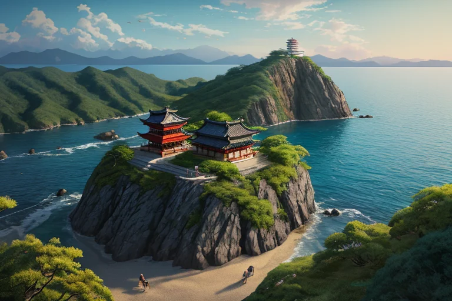
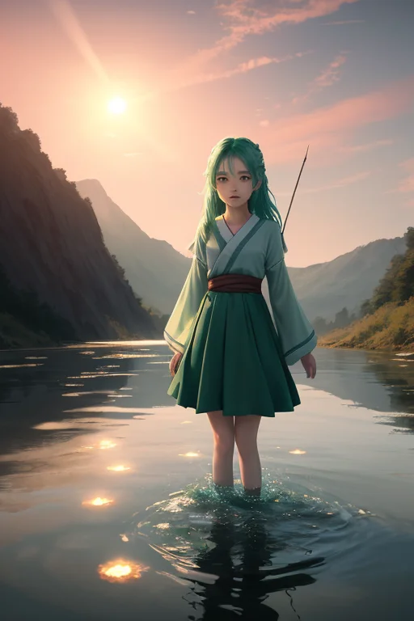
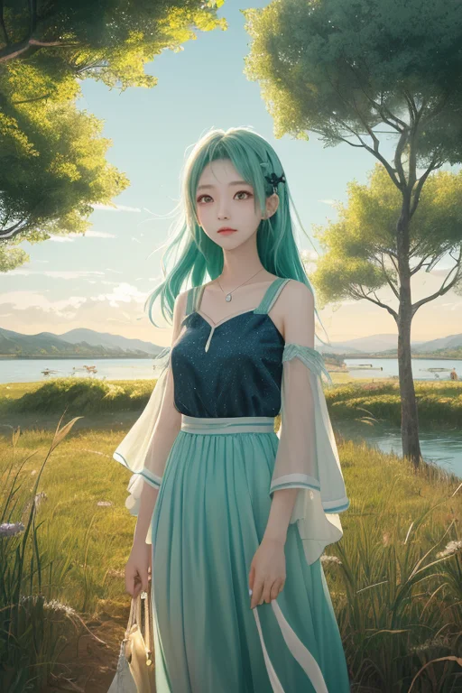
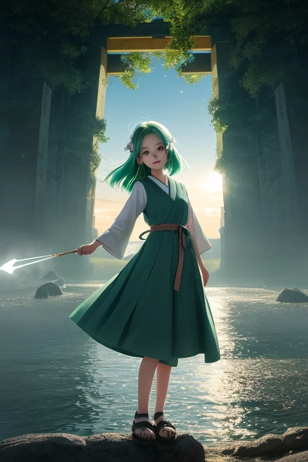

第一章 現実の茨城
あなたはまだ気づいていない。この土地にも、王がいることを。
筑波山の山頂から見下ろす関東平野は、霞ヶ浦の水鏡を挟んで、どこまでも続く。ここは、山と平野の境界。大洗磯前神社の鳥居は、荒波が砕ける岩の上に立つ。海と陸の境界。つくば研究学園都市の実験室の窓からは、広大な畑が広がる。未来と過去の境界。
茨城は、常に「何か」と「何か」の狭間にあった。その境界線を、深緑と銀の紋章を纏った王は静かに見つめている。名をイバラキア・フロンティア。彼は感情を持たないはずの存在だった。しかし、この土地の空気——干し芋の甘い匂い、納豆の粘り気のある時間、研究施設の静かな興奮——それらすべてが、彼の内側に微かな「好奇心」という名の歪みを生み出し始めていた。
彼は境界を守る者である。歪みを調整する者である。しかし今、彼自身が、内と外の境界で、静かに揺らいでいる。

第二章 歪みの兆候
霞ヶ浦の水面は、夕日に染まり、境界のない鏡のようだった。王はそのほとりに立ち、目に見えない歪みの波紋を感じ取っていた。つくば研究学園都市から流れ込む、人間たちの「未来への欲望」が、この土地の古くからの流れ——利根川や那珂川が刻んだ時間——と微妙に干渉している。それは災害というより、一種の「軋み」だった。
主席妖精のフロンティが、風のように駆け寄る。「王さま、筑波山の気圧配置に、小さな乱れが。でも、これは…自然のものじゃないみたい」
人間の実験が、時に地殻の微細なストレスを生む。王の役目は、それを増幅させず、そっと解きほぐすことだ。彼は銀の矢印を象った紋章をかざし、乱れを吸収する。しかし、その瞬間、彼は「何か」を感じた。実験に懸ける人間たちの熱意、失敗への焦り、ほんの一瞬の達成感——それらの感情の断片が、調整のプロセスを通じて、直接に流れ込んできたのだ。
本来、感情を持たないはずの王の胸に、微かな「熱」が灯った。それは、好奇心という名の、最初の歪みだった。
第三章 王の葛藤
筑波研究学園都市の実験室で、イバラキアは立ち止まった。彼の銀の矢印は、精密機器の微細な振動を鎮めていた。だが、同時に、研究者たちの「諦めきれない」という粘り強い感情が、川の流れのように押し寄せてくる。それは、霞ヶ浦の水面を揺らす風とは全く異質な、内側から湧き上がる熱だった。
拒絶すべきか。王は感情の流入を断つ術を知っている。境界線を守る者として、それは当然の自己防衛だ。しかし、フロンティが彼の周りを旋回し、好奇心をそそるように囁く。「見てごらん、王。彼らは、知らない境界を、自らの意志で越えようとしている」
彼は手を伸ばした。銀の矢印が、感情の流れに触れる。焦り、挫折、そしてほんの一筋の希望。それらが混ざり合い、彼の内側で「葛藤」という初めての重みに変わった。境界を越えるとは、自分という内側の秩序が乱されることなのか。それとも。
袋田の滝が岩を穿つように、未知の感情は彼の無感覚の殻に、小さな穴を開け始めていた。

第四章 妖精との対話
霞ヶ浦の岸辺で、フロンティが風に揺れる葦の穂を見つめていた。「王、知ってる？境界を越えるって、出会いと別れがセットなんだよ」
彼は振り返らない。筑波研究学園都市から流れてくるデータの風を、まだ整理できずにいた。
「黄門様だって、あちこちの境界を越えた。でも、助けた人とは必ず別れた。それが『越える』ことの代償」
トネリアが大河の流れを微かに変えながら言った。「流れは変えられる。けれど、すべての水が同じ岸に留まることはない。新しい流れは、古い形との別れを意味する」
彼は、自分の中に穿たれた「葛藤」の穴を見つめた。そこから、筑波山の麓でメロンを育てる農家の誇りや、あんこう鍋を囲む家族の笑い声が、風に乗って流れ込んでくる。それらは「秩序」ではない。けれど。
「別れがなければ、出会いもない」
フロンティが呟いた。その言葉が、彼の中の銀の矢印を、ほんの少しだけ前に向かわせた。

第五章「微調整と余韻」
霞ヶ浦の水面は、夕日に染まり、境界のない鏡のようだった。イバラキアは、つくば研究学園都市の街灯が一つ、また一つと灯っていくのを、遠くから見つめていた。彼は、葛藤の穴を塞ごうとはしなかった。代わりに、その穴を「通り道」に変えた。研究都市から生まれる未来への熱気と、田園に息づく伝統の温もり。その両方の風を、穴を通して行き来させ、混ざり合う速度をほんの少しだけ緩やかに調整した。混ざることによる摩擦の熱を、ほんのわずか冷ますために。
大洗磯前神社の鳥居の下で、海外からの研究者が地元の漁師と、身振り手振りで会話していた。言葉は完全には通じていない。けれど、干し芋を分け合い、納豆の糸を一緒に驚いて見るうちに、何かが伝わっていく。イバラキアは、その「何か」が伝わる確率を、微かに補正した。彼自身が感じ始めた「好奇心」という感情が、銀の矢印にほのかな温かみを与え、それは見えない境界線を、溶かすことなく透過する光となった。
変わるのは、形ではない。筑波山は変わらずそこにあり、袋田の滝は落ち続ける。変わるのは、流れが交差する「間」の質だ。ほんの少しの遅延と、ほんの少しの透過。それだけで、出会いは衝突ではなく、邂逅になる。彼は調整者に過ぎない。すべてを変える力などない。ただ、この土地に吹く風の向きを、未来へ向かう矢印が、ほんの少しだけ哀愁を帯びる程度に、微調整する。
あなたの町にも、王がいる。